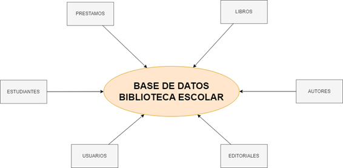
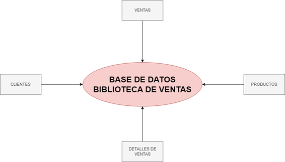
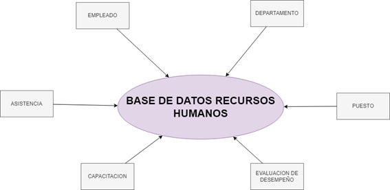
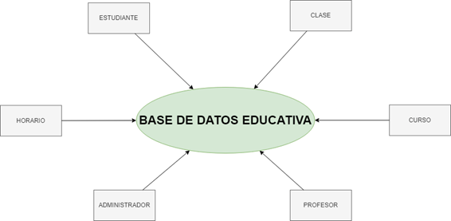
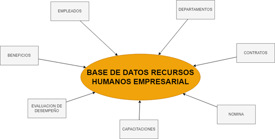

CINCO BASE DE DATOS

Se mostraran a continuacion las base de datos realizadas a lo largo del semestre.
Biblioteca Escolar
La base de datos de una biblioteca escolar tiene como objetivo gestionar de manera eficiente los recursos bibliográficos disponibles para los estudiantes y docentes. Este sistema almacena información sobre los libros, revistas y otros materiales de lectura, permitiendo un fácil acceso a los usuarios. Además, gestiona el préstamo de libros, las fechas de devolución, y los registros de los usuarios para garantizar un control adecuado del inventario. La implementación de esta base de datos ayuda a mejorar la organización de los recursos educativos dentro de la institución y facilita la consulta rápida y la administración de préstamos.
Biblioteca de Ventas
Una biblioteca de ventas es una base de datos diseñada para almacenar información relacionada con productos, clientes y ventas en un contexto comercial. Este sistema permite hacer un seguimiento detallado de las transacciones de venta, gestionando productos, precios, descuentos y cantidades. Además, facilita la creación de reportes de ventas, control de inventarios y la actualización de datos de clientes. Su principal objetivo es optimizar la administración de las ventas, mejorar la experiencia del cliente y ofrecer una visión clara del desempeño de las operaciones comerciales.
Recursos Humanos
La base de datos de recursos humanos tiene la función de organizar y administrar la información relacionada con el personal de una organización. Esta base de datos contiene registros sobre los empleados, incluyendo datos personales, historial laboral, salarios, beneficios, capacitaciones y evaluaciones de desempeño. A través de esta base de datos, el departamento de recursos humanos puede gestionar de manera eficiente los procesos de contratación, nómina, capacitación y desarrollo de personal. Su uso adecuado permite mejorar la gestión del talento humano, garantizando la productividad y el bienestar de los empleados dentro de la empresa.
Educativa
Una base de datos educativa se utiliza para organizar y almacenar información relacionada con estudiantes, programas académicos, calificaciones, horarios, y otros elementos relevantes en el ámbito educativo. Este sistema permite un seguimiento exhaustivo del progreso académico de los estudiantes, la gestión de cursos y la planificación de actividades académicas. Además, facilita la administración de los recursos educativos y mejora la comunicación entre estudiantes, docentes y administradores. Una base de datos educativa eficiente ayuda a garantizar una educación más organizada y accesible.
Recursos Humanos Empresarial
La base de datos de recursos humanos empresarial está orientada a la gestión del personal dentro de las organizaciones grandes o corporativas. Abarca no solo los datos básicos de los empleados, sino también los contratos laborales, la nómina, evaluaciones de desempeño, programas de capacitación, y beneficios. Este sistema es fundamental para optimizar el proceso de contratación, el seguimiento de los salarios y beneficios, la gestión de las evaluaciones periódicas de desempeño, y el cumplimiento de normativas laborales. Una base de datos de recursos humanos empresarial permite a la compañía gestionar eficazmente su fuerza laboral y tomar decisiones estratégicas basadas en datos.
Presentacion Final
Conclusión Final
Las bases de datos son herramientas fundamentales en la organización y gestión de información en diversos ámbitos. Ya sea en el contexto educativo, empresarial o comercial, cada tipo de base de datos cumple una función crucial para facilitar el acceso, control y análisis de los datos. Desde la gestión eficiente de libros en una biblioteca escolar, el seguimiento de ventas en una biblioteca de ventas, hasta la administración de personal en recursos humanos o la optimización de procesos en recursos humanos empresarial, cada sistema está diseñado para mejorar la eficiencia, reducir errores y permitir una toma de decisiones más informada.
El uso adecuado de bases de datos no solo organiza la información de manera más accesible, sino que también contribuye a optimizar recursos, agilizar procesos y mejorar la experiencia tanto para usuarios como para administradores. En definitiva, implementar un sistema de base de datos bien estructurado es una inversión estratégica para cualquier organización que busque optimizar sus operaciones, garantizar la integridad de sus datos y apoyar el crecimiento de sus actividades.
Regresar...